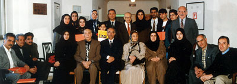
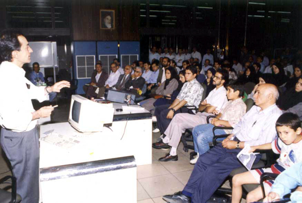
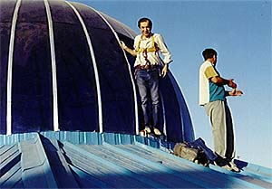
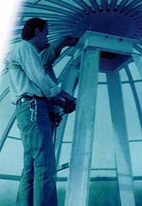
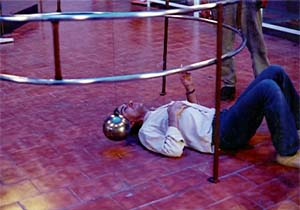
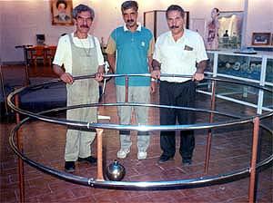

{kind=link}
{kind=link}


Copyright © Ali Parsa 1998-2011
All rights reserved
A Science Museum for Iran
I am a member of the Board of Trustees for Zirakzadeh Science Foundation. The foundation aims at building a science museum in Iran. So far we have been able to set up ten science centers in Tehran, and other cities. We have coperated with many national and international institutions. In Aug. 1999 we invited a group of American scientists to view the total solar eclipe. In 2004 we had a joint event with the cultural section of the French Embassy to view the Venus Transit from atop the historical Maragheh Observatory hill, in the city of Maragheh. About 1000 students from schools in Maragheh attended the event.


A presentation of ZSF about the Mars Pathfinder, the day after it landed in Mars
Foucault Pendulum
These are pictures of our effort to install a Foucault's pendulum in one of the science centers in Tehran, back in 1996. The basic design of the base of the pendulum was kindly sent to ZSF by the Deutsches Museum in Munich. The length is 12.5 m, and we were using climbers' safety equipment to do the job.




Links
http://www.ZirakzadehFoundation.org/
This site is set up by a supporter and will be the official site shortly.
Pictures of a science trip to the US

Copyright © Ali Parsa 1998-2011
All rights reserved